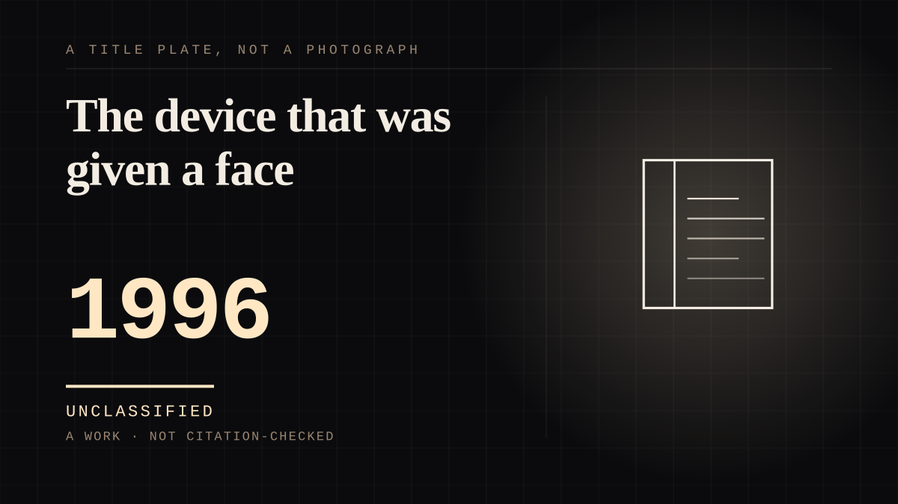

A work · 1996 ·
The device that was given a face
A keyring-sized screen with a creature on it that needed feeding, cleaning and attention, and a person who needed it to do the same.

The strongest available case for the animate shelf, because the mind is unmistakably attributed to something that has none. The creature cannot want anything; every appearance of wanting is the rule set producing a state that looks like one. The attachment is nonetheless real and lasts, and the interesting question is not whether people know this but why knowing it does not help.
Where it sits
1950 1950-1999 · 1996 1999
Provenance · 1 source record(s)
- needs-sourceObserved attachment and care behaviour toward the virtual pet, and its decline on discontinuation.Barsh, L., et al. (2006). Tamagotchi virtual pets. CHI '06: Proceedings of the 24th Annual Conference on Human Factors in Computing Systems, 687-692.
COMPANION The assistant you talk to
Connected · 3 out, 0 in
So many people want to believe he's realof the same time as · 1986 · A workSixty-five percent by sevenof the same time as · 1934 · A mechanism or tacticNot all ghosts are badof the same time as · 1945 · A work
It sits in